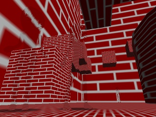

サンプルプログラム ３Ｄアクション基本＋光学迷彩風モデル描画 ( 要プログラマブルシェーダー２．０ )

「６．３Ｄアクション基本＋プレイヤー以外のキャラクター」のモデル描画をプログラマブルシェーダーを用いて光学迷彩風にしたものです。
手順としてはまず背景だけを裏画面とは別の画面に描画して、その後普通に裏画面にもステージモデルを描画した後、キャラクターモデルを
光学迷彩風描画要の頂点シェーダーとピクセルシェーダーを使用して描画します。
頂点シェーダーでは射影座標とビュー法線を出力して、ピクセルシェーダーでは射影座標から事前に描画しておいたステージモデルだけを
描画した画像の中での位置を割り出し、その座標をビュー法線方向に少し移動させた座標でステージも出るだけを描画した画像から色を取得します。
するとキャラクターの形に少し歪んだステージモデルの画像が描画されるので、結果的に光学迷彩風になります。
プログラムの実行に必要なファイルのセットはこちらにあります。
Ｃ＋＋のプログラム
「６．３Ｄアクション基本＋プレイヤー以外のキャラクター」から加えた変数群は「TempDrawScreen」で検索すると見つかります。
光学迷彩風描画の処理は関数「Render_Process」の中身を書き換えて行っています。
頂点シェーダーのプログラム
ピクセルシェーダーのプログラム
戻る